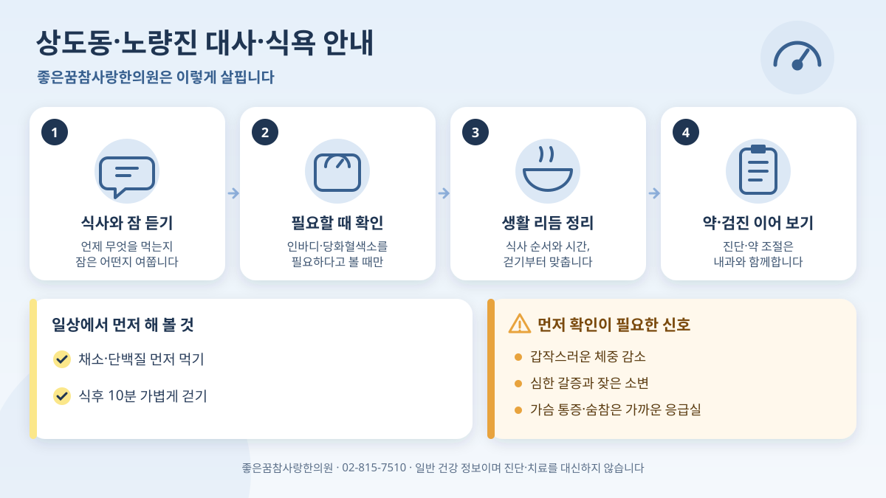
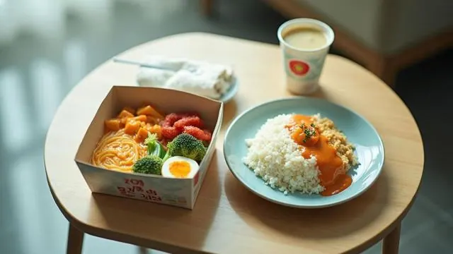
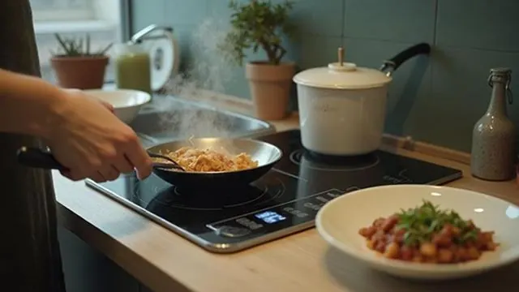
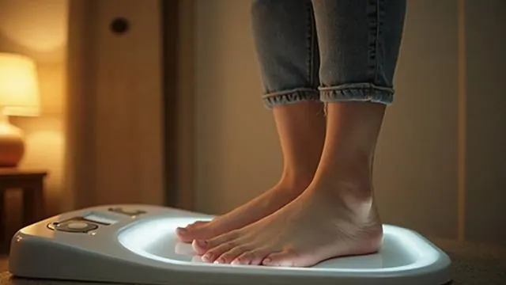
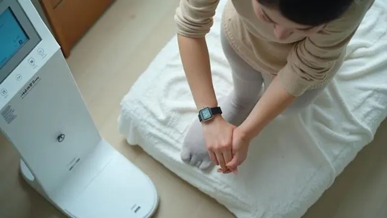
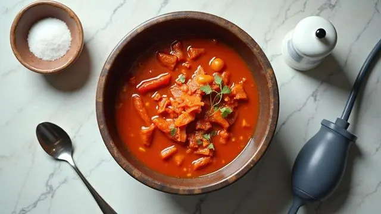

체중, 혈압, 혈당, 콜레스테롤이 걱정되기 시작한 분을 위한 안내입니다. 좋은꿈참사랑한의원은 수치만 보지 않고 식욕과 식사 시간, 잠, 활동의 리듬을 먼저 여쭈며, 복용 중인 약은 임의로 중단하지 않습니다.

대사증후군은 무엇인가요?
대사증후군은 복부 비만, 높은 혈압, 높은 공복 혈당, 높은 중성지방, 낮은 HDL 콜레스테롤 가운데 여러 가지가 함께 있는 상태를 말합니다. 하나하나는 경계선이어도 함께 모이면 생활 리듬을 점검해 볼 신호가 됩니다.
검진 결과지에서 허리둘레, 혈압, 공복혈당, 중성지방, HDL 콜레스테롤 칸을 먼저 확인해 보세요. 어느 항목이 경계에 있는지 알면 생활에서 무엇부터 바꿀지 정하기 쉬워집니다.
상담에서 자주 듣는 이야기
체중이 늘어난 시기와 생활의 변화가 겹치는 경우가 많습니다. 이직, 수험 준비, 출산, 은퇴처럼 생활이 바뀐 때를 함께 떠올려 보시면 상담이 구체적이 됩니다.
- 검진에서 '경계'라는 말을 처음 들었을 때
- 야식과 늦은 저녁이 습관이 되었을 때
- 잠이 부족한 날 식욕이 커질 때
- 체중이 줄다가 멈춘 정체기
먼저 이렇게 여쭙니다
- 하루 식사 시간과 먹는 순서
- 잠드는 시각과 수면 시간
- 건강검진 결과지와 복용 중인 약
- 진짜 배고픔과 '입이 심심한' 느낌의 차이
- 물은 하루에 얼마나 드시나요?
생활에서 먼저 해 볼 것
무리하게 굶거나 한 가지 음식만 먹는 방법은 오래 이어 가기 어렵고 몸에 부담이 될 수 있어 권하지 않습니다. 작은 습관 하나를 2주 이상 이어 가는 것을 목표로 합니다.
- 채소·단백질을 먼저 먹고 밥은 나중에
- 저녁은 잠들기 3시간 전에 마치기
- 식후 10~15분 걷기
- 짠 국물은 건더기 위주로 먹기
한의원에서 함께 살피는 것
필요하다고 판단될 때 인바디 770으로 체성분을 측정하고, 당화혈색소 검사기로 최근 혈당 흐름을 확인합니다. 숫자는 상담을 대신하지 않고 식욕·소화·잠과 함께 보는 참고 자료입니다. 이종호 대표원장은 당뇨·대사증후군·다이어트를 주요 진료 분야로 소개하고 있습니다.
한의학에서는 식욕을 이렇게 함께 봅니다
한의학에서는 식욕과 체중을 소화의 힘, 몸의 온기, 잠, 마음의 긴장과 함께 봅니다. 그래서 '얼마나 먹는가'만큼 '언제, 어떤 기분일 때 먹는가'를 중요하게 여쭙습니다. 식후 졸림, 붓기, 손발 냉기, 대변 상태도 함께 살피는 이유입니다.
- 스트레스를 받을 때 단 것이 당기는지
- 아침을 거르고 저녁에 몰아 먹는지
- 식후에 졸리거나 몸이 붓는지
이럴 때는 다른 진료를 먼저 받으세요
- 가슴 통증이나 숨참이 있을 때
- 한쪽 팔다리 힘 빠짐, 말 어눌함이 생길 때: 즉시 119
- 심한 갈증, 잦은 소변, 체중 급감이 함께 있을 때
- 약을 먹는데도 혈압·혈당이 계속 높을 때: 처방 의료기관 먼저
좋은꿈참사랑한의원 진료는 이렇게 진행됩니다
첫 방문은 접수, 상담, 진찰, 치료, 귀가 전 안내 순서입니다. 다음 방문에서는 지난번 기록과 생활 변화를 이어서 봅니다. 혈압·혈당·콜레스테롤 약은 처방한 의사와 상의 없이 줄이거나 끊지 않습니다.
인바디와 당화혈색소 검사는 모든 분께 하지 않으며, 진찰 후 필요하다고 판단될 때 안내합니다.
상도동·노량진에서
학원과 사무실이 많은 노량진·상도동 생활권에서는 늦은 저녁, 배달 야식, 오래 앉아 있는 시간이 대사 리듬에 영향을 주기 쉽습니다. 상도동의 언덕길은 식후 걷기 코스가 되기도 하지만 무릎이 불편하면 평지를 고르세요. 좋은꿈참사랑한의원은 상도역 3번 출구에서 약 400m 거리이며 평일 저녁 8시까지 진료합니다. 노량진역 3번 출구에서는 마을버스 동작01번을 타고 신동아리버파크 정류장에서 내리면 됩니다.
자주 묻는 질문
상도동에서 다이어트 상담을 받을 수 있는 한의원이 있나요?
좋은꿈참사랑한의원(서울 동작구 만양로2길 2 신성빌딩 3층·5층)에서 체중과 식욕 상담을 합니다. 무리한 절식은 권하지 않고 식사·잠·활동의 리듬을 함께 살핍니다.
한의원에서 인바디 검사를 할 수 있나요?
필요하다고 판단될 때 인바디 770으로 체수분·근육량·체지방을 측정합니다.
당화혈색소는 무엇을 알려 주나요?
최근 2~3개월의 평균적인 혈당 흐름을 반영하는 수치입니다. 진단과 약 처방이 필요하면 내과 진료를 안내합니다.
혈압약을 먹고 있어도 한약 상담이 가능한가요?
가능합니다. 복용 중인 약 이름을 알려 주시면 함께 확인하며, 약은 임의로 중단하지 않습니다.
건강검진 결과지를 가져가야 하나요?
있으면 도움이 됩니다. 이전 수치와 비교하며 생활 리듬을 이야기하기 쉬워집니다.
야식을 끊기 어려운데 상담할 수 있나요?
네. 야식이 생기는 시각과 낮의 식사, 잠의 리듬을 먼저 여쭙고 현실적인 방법을 함께 찾습니다.
주말에도 상담받을 수 있나요?
토·일·공휴일 오전 9시 30분부터 오후 3시까지 진료합니다.
한약을 먹으면 살이 빠지나요?
체중 변화는 사람마다 다르고 결과를 약속드릴 수 없습니다. 진찰 후 식사·잠·활동의 리듬과 함께 한약이 필요한지 상담합니다.
평일 저녁에도 상담받을 수 있나요?
평일은 오후 8시까지 진료합니다(점심 13:00~14:00). 네이버 예약이나 02-815-7510으로 예약하실 수 있습니다.
감수: 좋은꿈참사랑한의원 대표원장 이종호 · 마지막 확인 2026-11-24 · 일반적인 건강 정보이며 진단·치료를 대신하지 않습니다.
대사증후군·식욕 글 모아 보기 (34편)

낮에는 끼니를 거르다 밤에 몰아 먹는 수험생은 무엇을 점검하나요?
낮에 끼니를 거르고 밤에 몰아 먹는다면 점심을 간단히라도 챙기고 오후 간식으로 허기를 나누며 잠들기 3시간 전에 식사를 마치는 것부터 시작하고, 체중이 출렁이면 식사와 잠의 리듬을 함께 살핍니다.
수정 2026-11-24

자취하며 편의점 음식으로 끼니를 때우다 체중과 검진 수치가 걱정될 때는 어떻게 살피나요?
혼자 살며 도시락, 라면, 삼각김밥으로 끼니를 해결하면 짠 음식과 단 음료는 늘고 채소와 단백질은 부족해지기 쉬워, 하루 식사 내용과 시간, 검진 결과를 먼저 함께 보고 편의점 안에서도 고를 수 있는 조합을 정리합니다.
수정 2026-11-24

혈압이 높다는 말을 듣고 동네 언덕길 걷기를 시작하려 할 때는 무엇을 먼저 확인하나요?
혈압이 높은 분이 언덕길 걷기를 시작할 때는 걷는 강도와 시간, 복용 중인 약, 걷는 중 불편한 신호를 먼저 확인하고, 평지에서 시작해 몸 상태를 보며 조금씩 늘리는 방법을 함께 정리합니다.
수정 2026-11-24
야근할 때마다 책상 서랍 간식에 자꾸 손이 갈 때는 어떻게 살피나요?
야근할 때마다 서랍 간식에 손이 간다면 야근 예정일에는 오후 6~7시 사이에 간단히라도 저녁을 먹고, 간식은 양을 정하기 쉬운 것으로 바꾸며 손이 갈 때 물 한 잔과 잠깐 걷기부터 해 보시기를 권합니다.
수정 2026-11-24

편의점 도시락·라면으로 끼니를 때우는 날이 많을 때는 무엇부터 바꿔 볼까요?
편의점 도시락과 라면으로 끼니를 때우는 날이 많다면 메뉴를 한 번에 바꾸기보다 라면 국물을 남기고 단백질이나 채소 한 가지를 더하며 단 음료를 물로 바꾸는 것부터 시작하시기를 권합니다.
수정 2026-11-24

중앙대·숭실대 근처 자취방에서 혼자 밥을 해 먹을 때 식사 리듬은 어떻게 잡나요?
자취하며 혼자 밥을 해 먹을 때는 수업이 없는 날에도 첫 끼 시각을 정해 두고, 밥을 한 번에 지어 나눠 얼리며 밤 11시 이후에는 가벼운 것으로 바꾸는 것부터 식사 리듬을 잡아 보시기를 권합니다.
수정 2026-11-24
체중이 더 이상 줄지 않는 정체기에는 무엇을 먼저 점검하나요?
체중 정체기에는 숫자 하나보다 식사 시간과 순서, 잠, 활동량, 스트레스가 처음과 어떻게 달라졌는지를 먼저 점검하고 복용 약과 검진 수치를 함께 확인하며 무리한 절식은 권하지 않습니다.
수정 2026-11-23

인바디에서 체수분이나 부종 항목이 신경 쓰일 때는요?
체수분과 부종 관련 수치는 짠 음식, 오래 서 있거나 앉아 있기, 잠, 생리 주기에 따라 달라질 수 있어, 붓는 시간대와 부위를 먼저 묻고 오래가거나 다른 증상이 있으면 내과 검사를 안내합니다.
수정 2026-11-24
인바디 결과지는 어디부터 보면 되나요?
인바디 결과지는 체중 한 줄보다 체수분·근육량·체지방이 어떻게 이루어져 있는지 보는 표라서, 지난 결과와 비교해 어느 칸이 달라졌는지부터 읽으면 이해가 쉽습니다.
수정 2026-11-24
체중은 정상인데 인바디에서 근육량이 적게 나왔어요
체중이 정상 범위여도 근육량이 적고 체지방 비율이 높게 나올 수 있어, 끼니별 단백질과 하루 활동량, 잠과 피로를 먼저 묻고 생활 속에서 근육을 쓰는 방법부터 함께 찾습니다.
수정 2026-11-24
뱃살이 걱정될 때 인바디 기록은 어떻게 활용하나요?
뱃살 걱정은 체중보다 복부 지방과 생활 리듬의 문제인 경우가 많아, 허리둘레와 인바디 기록을 몇 주 간격으로 비교하며 저녁 시각·야식·술·잠·앉아 있는 시간을 함께 점검합니다.
수정 2026-11-24

인바디 검사 전에는 무엇을 준비하면 되나요?
체성분 검사는 몸속 수분 상태에 따라 수치가 달라질 수 있어, 검사 전 식사와 운동·사우나, 화장실, 금속 장신구, 몸속 전자 의료기기와 임신 여부를 먼저 확인합니다.
수정 2026-11-24
건강검진에서 중성지방이 높다고 했을 때 무엇을 알아두면 좋을까요?
건강검진에서 중성지방이 높게 나오면 검사 전 금식과 전날 음주를 먼저 확인하고 술, 단 음식, 체중, 활동량을 점검하며 재검과 내과 진료를 함께 안내하고 복용 약은 임의로 중단하지 않습니다.
수정 2026-11-23
당화혈색소(HbA1c) 수치는 무엇을 뜻하나요?
당화혈색소는 최근 2~3개월의 평균적인 혈당 흐름을 반영하는 수치라서 하루 혈당보다 생활 리듬의 결과를 보는 참고 자료로 쓰이며, 진단과 약 처방은 내과 진료가 필요합니다.
수정 2026-11-24
피곤함이 오래가면 혈액검사가 필요한가요?
오래가는 피로는 잠, 식사, 스트레스뿐 아니라 빈혈이나 갑상선, 혈당 같은 원인과도 관련될 수 있어, 피로의 양상과 기간을 먼저 묻고 필요하다고 판단될 때 확인하거나 해당 진료과를 안내합니다.
수정 2026-11-24
운전하는 직업으로 차 안 간식과 불규칙한 끼니가 반복될 때는 어떻게 조절하나요?
운전 중 졸음을 쫓으려 단 음료와 간식을 자주 먹고 끼니가 불규칙해지면 체중과 혈당 관리가 어려워질 수 있어, 간식의 종류와 식사 시각부터 함께 살핍니다.
수정 2026-11-24
다이어트 상담에서는 무엇을 확인하나요?
다이어트 상담에서는 체중 숫자보다 식사 패턴, 식욕, 잠, 활동량, 복용 중인 약과 검진 수치를 함께 확인하고, 필요하다고 판단될 때 인바디로 몸의 구성을 살핀 뒤 무리하지 않는 목표를 정합니다.
수정 2026-11-24
콜레스테롤과 중성지방 수치가 높게 나오면 생활에서 무엇부터 보나요?
콜레스테롤과 중성지방은 식사, 음주, 활동량, 체질과 가족력이 함께 영향을 줄 수 있어, 저녁 식사와 술, 간식 습관을 먼저 묻고 약이 필요한지는 내과와 상의하도록 안내합니다.
수정 2026-11-24
공복혈당이 경계 수준이라고 들었을 때 생활에서 무엇을 살펴보나요?
공복혈당이 경계 수준이라는 안내를 받으면 식사 시간과 순서, 단 음료, 활동량, 체중, 잠을 먼저 점검하고 정기 재검과 내과 진료를 함께 권하며 갈증과 소변량 증가가 있으면 병원 진료를 먼저 권합니다.
수정 2026-11-23
건강검진 혈액검사 결과지를 가져가면 무엇을 같이 보나요?
혈액검사 결과지에는 간 기능, 지질, 혈당, 신장 기능, 빈혈 수치 등 여러 항목이 있어, 지난해와 달라진 항목과 지금의 생활·증상을 함께 보고 진단이나 약이 필요해 보이면 해당 진료과를 안내합니다.
수정 2026-11-24

짠 음식과 국물을 좋아하는 습관은 혈압과 어떤 관련이 있나요?
짠 음식과 국물, 가공식품을 자주 먹는 습관은 혈압과 관련될 수 있어 식사 모습을 일상의 말로 묻고 국물 남기기와 양념 줄이기 같은 현실적인 방법을 안내하며 혈압약은 임의로 중단하지 않습니다.
수정 2026-11-24
건강검진 결과지에서 대사증후군은 어떤 항목을 보나요?
대사증후군은 허리둘레, 혈압, 공복혈당, 중성지방, HDL 콜레스테롤 다섯 가지 가운데 세 가지 이상이 기준을 벗어난 상태이며 기준은 지침에 따라 다를 수 있어 검진 결과지의 안내와 의사의 설명을 우선합니다.
수정 2026-11-24
당뇨 전단계라고 들었을 때 식사 순서와 간식은 어떻게 살피나요?
당뇨 전단계라는 안내를 받으면 식사 시간과 순서, 단 음료와 간식, 활동량을 일상의 말로 묻고 채소를 먼저 먹는 식사 순서와 식후 걷기 같은 현실적인 방법을 안내하며 정기 재검과 내과 진료를 함께 권합니다.
수정 2026-11-24
체중은 보통인데 복부 지방이 걱정될 때는 어떤 검진을 보나요?
체중이 정상이어도 배 둘레와 근육량, 혈당과 지질 수치가 기준을 넘을 수 있어, 검진 결과지의 허리둘레와 혈압·혈당·지질 항목을 함께 확인해 보도록 안내합니다.
수정 2026-11-24
혈압약·당뇨약을 먹고 있다면 다이어트 상담 전에 무엇을 알려야 하나요?
복용 중인 혈압약·당뇨약·콜레스테롤 약은 임의로 중단하지 말고 이름과 용량을 모두 알려 주세요. 최근 건강검진 결과와 약 목록을 가져오시면 생활 리듬과 함께 안전하게 살필 수 있습니다.
수정 2026-11-24
야식을 끊기 어려울 때는 어떤 점을 먼저 살펴보나요?
야식을 끊기 어려울 때는 의지만 탓하기보다 저녁 식사 시간과 양, 잠드는 시각, 진짜 허기와 스트레스성 허기의 구분을 먼저 살피고 생활 리듬을 조금씩 조정합니다.
수정 2026-11-24
물은 하루에 얼마나 마셔야 하나요? 대사 관리 관점에서
물은 하루 동안 나누어 충분히 마시는 것이 기본이며, 필요한 양은 활동량과 날씨, 신장·심장 질환, 복용 약에 따라 달라 정해진 양을 무리하게 채우기보다 몸 상태에 맞춰 조절합니다.
수정 2026-11-24
명절 음식을 과식하지 않으려면 어떻게 하면 좋을까요?
명절과 모임 음식은 먹고 싶은 음식과 술의 양을 미리 정하고 채소와 단백질을 먼저 먹으면 부담을 줄일 수 있으며, 다음 날은 굶기보다 평소 식사로 돌아가는 것이 중요합니다.
수정 2026-11-24
먹고 나서 자책이 들 때는 어떻게 마음을 살펴야 하나요?
먹고 나서 자책과 후회가 반복될 때는 자신을 탓하기보다 언제 어떤 마음일 때 먹게 되는지를 살피고 끼니를 규칙적으로 챙기며 폭식과 구토가 반복되거나 우울감이 깊으면 정신건강의학과 진료를 권합니다.
수정 2026-11-24
과일은 먹어도 되나요? 당이 걱정될 때 과일 먹는 법
과일에는 당이 들어 있지만 주스 대신 생과일로, 한 번에 한두 조각씩 식사의 일부로 먹으면 무리 없이 즐길 수 있으며, 당뇨약을 드시는 분은 과일 양과 시간을 처방한 의사와 상의합니다.
수정 2026-11-24
진짜 배고픔과 가짜 허기는 어떻게 구분해서 살피나요?
진짜 배고픔은 서서히 오고 무엇이든 먹을 수 있지만, 가짜 허기는 갑자기 오고 특정 음식이 당기는 경우가 많아, 먹고 싶은 순간의 상황과 감정을 함께 살펴보도록 안내합니다.
수정 2026-11-24
시험 당일 아침 식사와 카페인은 어떻게 계획하면 되나요?
시험 당일 아침에는 평소 먹어 본 가벼운 식사와 평소 마시던 정도의 카페인으로 속을 편하게 두는 것이 기본이며, 새로운 음식이나 음료는 피하도록 안내합니다.
수정 2026-11-24
물을 마셔도 갈증이 계속될 때는 어떻게 하나요?
물을 자주 마셔도 갈증이 가시지 않고 소변이 늘면 혈당 문제를 먼저 확인하도록 병원 검사를 권하며, 한의원에서는 식사와 땀, 생활 습관을 함께 살핍니다.
수정 2026-11-24
폭식 충동이 올 때는 어떤 점을 먼저 살펴보나요?
갑자기 한꺼번에 먹게 되는 폭식 충동은 의지만의 문제로 보기 어려워서, 굶은 시간과 수면, 스트레스, 식사 간격을 먼저 묻고 생활 리듬과 함께 살핍니다.
수정 2026-11-24